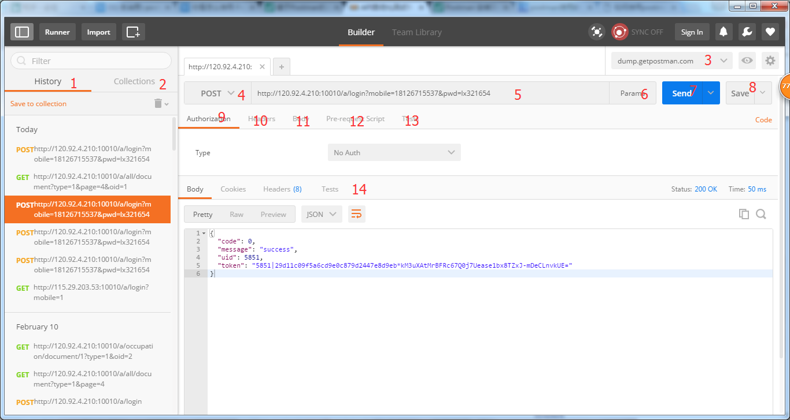
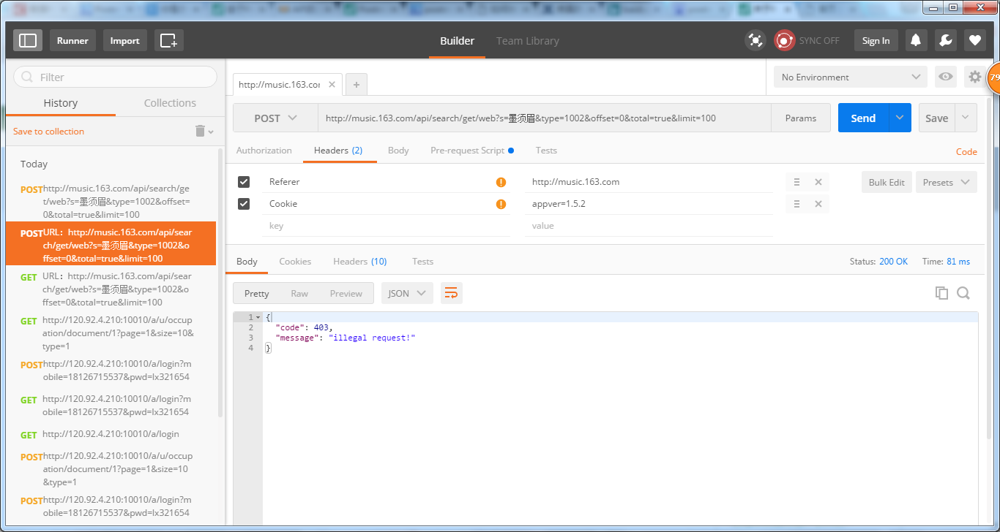
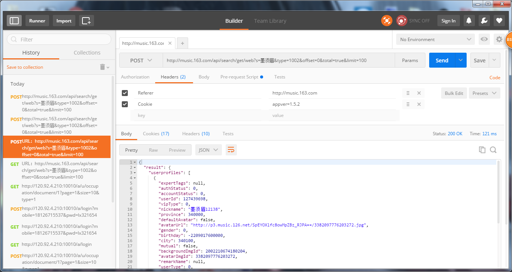

分享人：王相博
目录
1.背景介绍
2.知识剖析
3.常见问题
4.解决方案
5.编码实战
6.扩展思考
7.参考文献
8.更多讨论
当开发人员需要调试一个网页是否运行正常，并不是简简单单地调试网页的HTML、CSS、脚本等信息是否运行正常，更加重要的是网页能够正确是处理各种HTTP请求，毕竟网页的HTTP请求是网站与用户之间进行交互的非常重要的一种方式，在动态网站中，用户的大部分数据都需要通过HTTP请求来与服务器进行交互。Postman插件就充当着这种交互方式的“桥梁”。
Postman 是一个非常棒的Chrome扩展，提供功能强大的API & HTTP 请求调试。
-它能够发送任何类型的HTTP requests (GET, HEAD, POST, PUT..)，附带任何数量的参数+ headers;
-支持不同的认证机制（basic, digest, OAuth），接收到的响应语法高亮（HTML，JSON或XML）;
-Postman 能够保留了历史的请求，这样我们就可以很容易地重新发送请求，有一个“集合”功能，用于存储所有请求相同的API/域。
postman安装方法教程postman界面介绍：
1、postman调试的历史记录，保留了每次测试时的请求参数；
2、在Postman中，Collection类似文件夹，可以把同一个项目的请求放在一个Collection里方便管理和分享，Collection里面也可以再建文件夹；
3、设置environment variables（环境变量）和global variables（全局变量），点击右边的眼睛可以快速查看当前的变量；
4、选择HTTP 请求类型的地方，各种常见的不常见的非常全；
5、请求URL，两层大括号表示这是一个环境变量，可以在3的位置选择当前的environment，环境变量就会被替换成该environment里variable的值；
6、点击可以设置URL参数的key和value；
7、点击发送请求；
8、点击保存请求到Collection，如果要另存为的话，可以点击右边的下箭头；
9、设置鉴权参数，可以用OAuth之类的；
10、自定义HTTP Header；
11、设置Request body；
12、显示发起请求之前执行的脚本；
13、在收到response之后执行的测试；
14、返回数据的格式，Pretty可以看到格式化后的JSON，Raw就是未经处理的数据，Preview可以预览HTML页面。
获取数据：
URL：http://music.163.com/api/search/get/web?s=墨须眉&type=1002&offset=0&total=true&limit=100
配置header: Referer:http://music.163.com Cookie:appver=1.5.2
原因：没有让postman发送请求的时候使用这个网站的浏览器cookie
解决方法： 打开Postman Interceptor这个插件，让postman发送请求的时候使用这个网站的浏览器cookie
postman中的环境变量
参考二：Postman安装及使用入门教程
postman还有些什么功能？
BY : 王相博 | 李玺